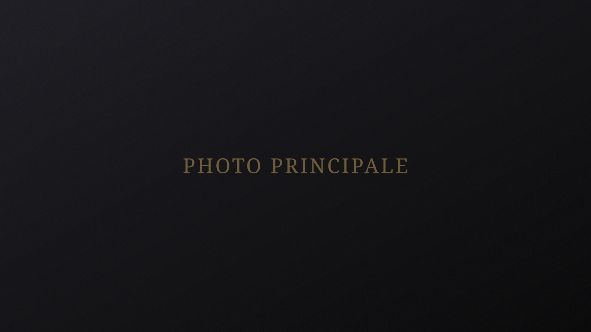

2025 · Salle Molière, Lyon
Concert des 30 ans de L'Artisanat Furieux
Concert anniversaire de l'ensemble de saxophones L'Artisanat Furieux, donné en salle Molière à Lyon à l'occasion de ses trente ans, avec Claude Delangle en soliste invité.

Biographie
Jeune saxophoniste français, Mickaël Solomin construit son parcours au sein de plusieurs conservatoires français auprès de personnalités reconnues du saxophone. Il débute son apprentissage à l'âge de huit ans au Conservatoire de Saint-Malo auprès de Jonathan Vinolo, avant de poursuivre ses études au Conservatoire de Rennes dans la classe de Ronan Baudry. Il intègre ensuite le Conservatoire de Lyon, où il travaille auprès de Jean-Denis Michat, saxophoniste et compositeur à la carrière internationale, puis rejoint le Conservatoire de Mulhouse, où il étudie actuellement auprès de Christian Wirth, soprano du célèbre Quatuor Habanera, et enrichit sa formation à travers différentes rencontres artistiques, notamment lors d'une masterclass avec Claude Delangle, ancien professeur de saxophone au CNSMD de Paris.
Titulaire d'un Diplôme d'Études Musicales du Conservatoire de Rennes, Mickaël poursuit aujourd'hui sa formation en CPES au Conservatoire de Mulhouse, dans une démarche tournée vers l'exigence artistique et la préparation au métier de concertiste.
Son univers musical se développe autour du répertoire classique, de la création contemporaine et du jazz. Il participe à différents concours et projets artistiques, parmi lesquels l'Andorra SaxFest et SAXGO. Il s'est notamment produit en salle Molière avec l'ensemble de saxophones L'Artisanat Furieux du Conservatoire de Lyon, a participé à la création de Sens de Ruben Nauge au Musée des Beaux-Arts de Lyon, ainsi qu'à un concert avec l'Orchestre d'Harmonie du CNSMD de Lyon.
Aujourd'hui, Mickaël développe son activité autour du concert et de la scène, avec l'ambition de proposer le saxophone dans des formats variés, du récital solo aux prestations de concertiste dans le cadre d'événements culturels et artistiques. Il souhaite faire découvrir la richesse et la diversité du saxophone à travers des programmes accessibles et exigeants, construits autour d'une identité artistique affirmée.
Parallèlement à son activité de concertiste, il enseigne le saxophone à l'École de musique Saint-Barthélémy à Mulhouse.
Concerts
Ville, Pays
Aucune date dans cette catégorie pour le moment.